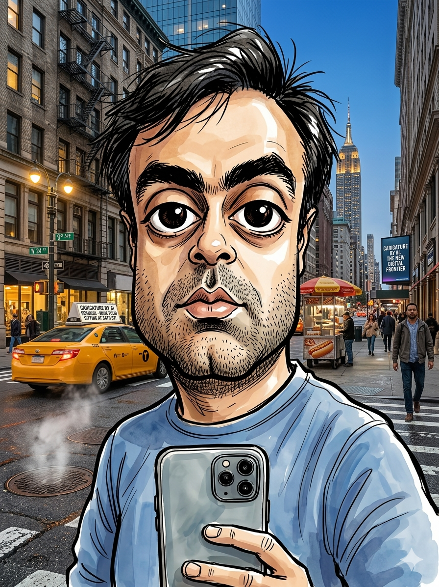

Sanidhya Khilnani
Product Leader · AI · Innovation
Emerging tech → products users love.
The best way to summarise 15 years of my product career is by mentioning that I've almost always been responsible for taking new emerging technology ideas and bringing them to life as products that users love.
I've held executive roles leading product and design functions at Kaia Health, leading the product function at Airtime, and leading small teams at Microsoft. Currently, I'm the senior-most IC PM at Pinterest working on AI incubation and innovation products leveraging LLMs and GenAI.
Applied Craft is where I think out loud about the things I've learned, and the things I'm still figuring out, at the intersection of product strategy and artificial intelligence.
All views expressed here are my own and are not reflective of, or in any way related to, my current or past employers.
The path
Image Segmentation → Collages, Auto Collages
Shuffles (new app) Growth. Brought Collages to Pinterest with >1B daily views, 100M+ DAU. Shipped Auto Collages. Working on LLMs and GenAI features.
Kaia Health
AI Driven Pose Correction → AI Physical Therapist
Led Product and Design teams in Germany while hiring a new US team. Drove PMF and 10x ARR. US Healthcare adoption with 3x paid clients.
Airtime
Sync Co-Watching → Live Social Network
Led Product and Data Science teams. Drove PMF and 1M+ DAU. Multiple "App of the Day" awards and consistently 4.4+ in App Store ratings.
Microsoft (Skype)
Conversational Understanding → Audio/Video Bots
Led video and audio bot interaction and bot discovery for Skype's Bot Framework. Later became Azure AI Bot Service with $100M+ ARR.
Microsoft (Outlook.com)
Entity and Intent Analysis → Email Intelligence
Information extraction (appointments, flights etc.) from emails. Later integrated with Office product line with $100M+ ARR.
The thread
The common thread across all of these roles: finding the product in emerging technology. Not the demo, not the research paper, not the pitch deck. The product. The thing real people use to solve real problems.
That's what Applied Craft is about. The craft of turning technology potential into product reality.
Stay Sharp
Join product leaders who prefer signal over noise.
Infrequent. Substantive. No filler.